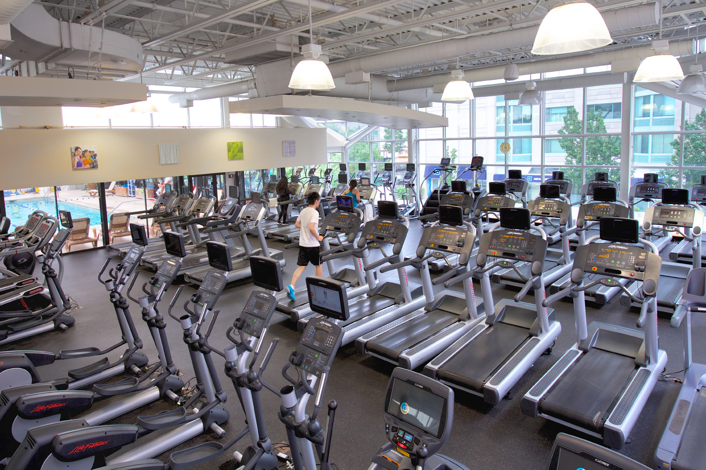
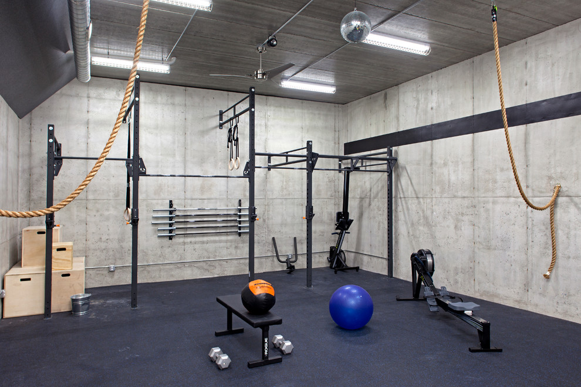
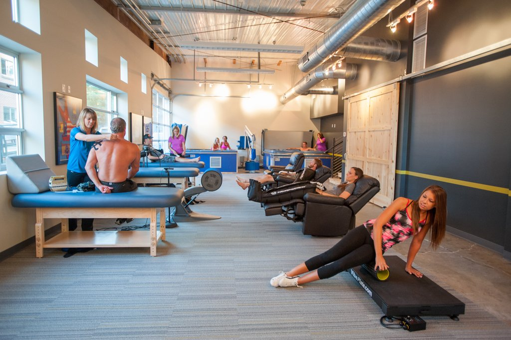

Locker Room
Our locker rooms and amenities are complete with bathrooms and showers, spacious lockers and hooks. We make sure to always clean, maintain and stock these areas for the comfort of our members.
We have a range of 82 lockers at our Gym including a kit which you may be familiar with such as towels, gloves, T-shirts and tissues.
"Our Lockers come up with a pattern based password, where no one has the authority to access to your lockers without your concern", therefore your valuables are safe with us!
Cardio Room
Whether you want increased energy or reduced stress, cardio training (otherwise known as cardiovascular or CV training) helps you live a fitter life while strengthening your heart and lungs. From interval workouts to endurance exercises, cardio training can also help to lower blood pressure and cholesterol levels.
We have a range of cardio equipment in our clubs including kit which you may be familiar with such as treadmills, cross trainers, and rowers, and some which you may not.

Crossfit Area
In gyms throughout the world the typical workout consists of isolation movements and extended aerobic sessions, with a focus on “back day”, “leg day” etc. The fitness community (from trainers to magazines) have the public believing that lateral raises, bicep curls, leg extensions combined with 20-40 minutes on the elliptical or treadmill are going to lead to some kind of great fitness.
As part of the CrossFit prescription, programming consists of “constantly varied functional movements performed at high intensity.” We replaced the lateral raises with push presses, the bicep curl with pull-ups, and the leg extension with squats. All CrossFit workouts are based on functional movements that reflect the best aspects of gymnastics, weightlifting and metabolic conditioning (cardio).
“The aim of CrossFit is to forge a broad, general and inclusive fitness supported by measurable, observable and repeatable results. The program prepares trainees for any physical contingency – not only for the unknown but for the unknowable, too. Our specialty is not specializing. By employing a constantly varied approach to training, functional movements and intensity lead to dramatic gains in fitness.
we wholeheartedly agree with CrossFit’s philosophy and methodologies, which is why both our trainers and founders have the CrossFit trainer certifications. Our mission is to introduce CrossFit to the island and create a tight-knit community that share the same goals of improving their health, fitness and quality of life – and have some fun while doing it!
We provide over 30 hours of CrossFit classes a week including CrossFit Kids, Yoga and other specialty courses in addition to Personal training and Corporate programs.

Protein Cafe
Whether you want to refuel after a workout or enjoy a social Starbucks with a friend, you can feel at home in our Protein Cafe Bar. We host fun social events all year round and offer delicious nutritional meals, including fantastic offers on a range of Protein products to maximise your pre or post-workout pump.
Protein Cafe is what you get when you put together our passion for nutrition and taste! Taste our Protein shakes, which also comes in with add-ons!
◾Nutella
◾Peanut Butter
◾Oreo Cookies
◾Oats
◾Fruit of your choice
Recovery Area
It turns out that if you don't allow your muscles to recover between workouts, you could actually be decreasing your fitness – or worse. In people who exercise moderately to vigorously, experts say, not giving the muscles sufficient downtime can cause overtraining, physical and mental fatigue, difficulty sleeping, decreased immunity, mood swings and overuse injuries, such as stress fractures, muscle strains and joint pain.
"We need to think of rest and recovery as an integral part of being fit and healthy", not just the time spent in the gym.
So here we provide our clients a satisfactional recovery massage for over 30 minutes!

© 2023 Iron Paradise (Fitness Website) Project | Designed by Himaz Mowlana